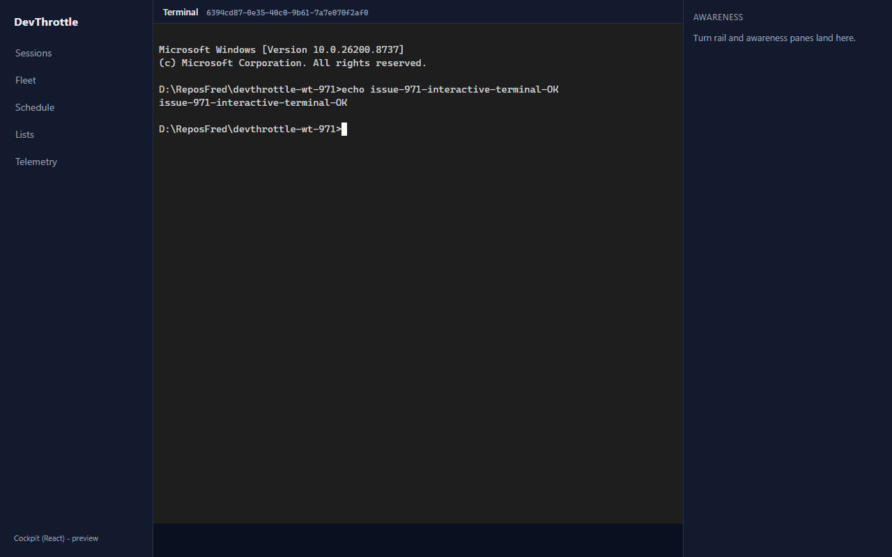
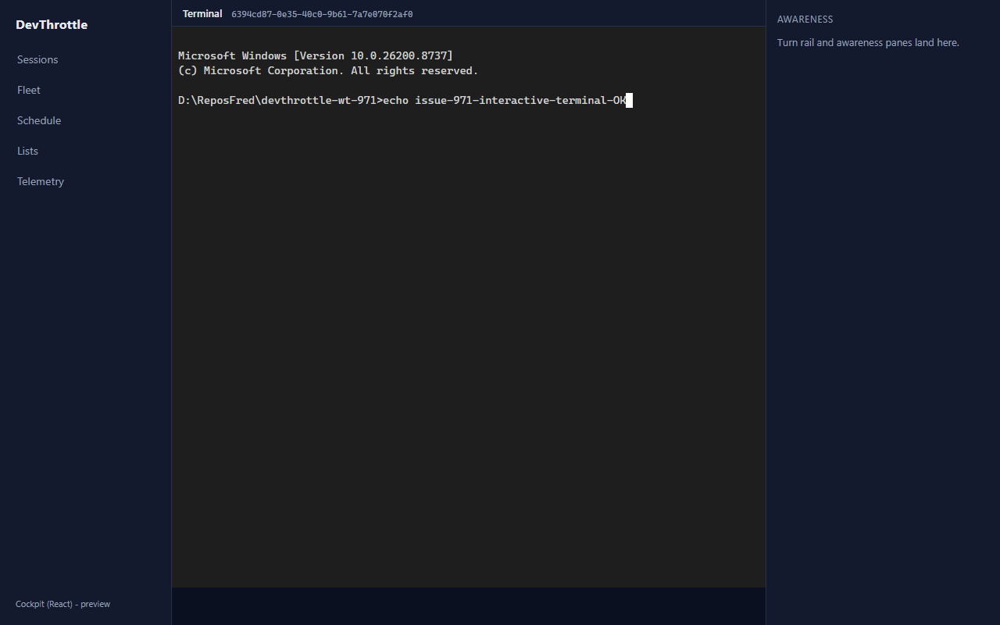
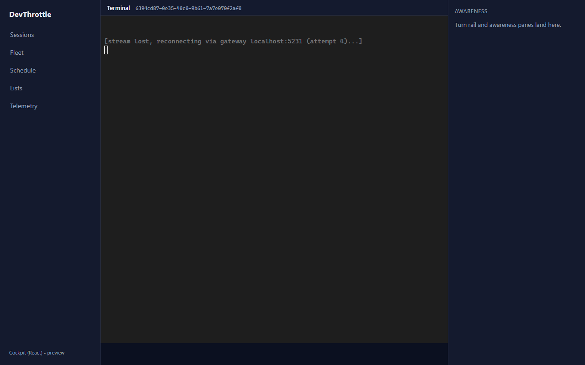
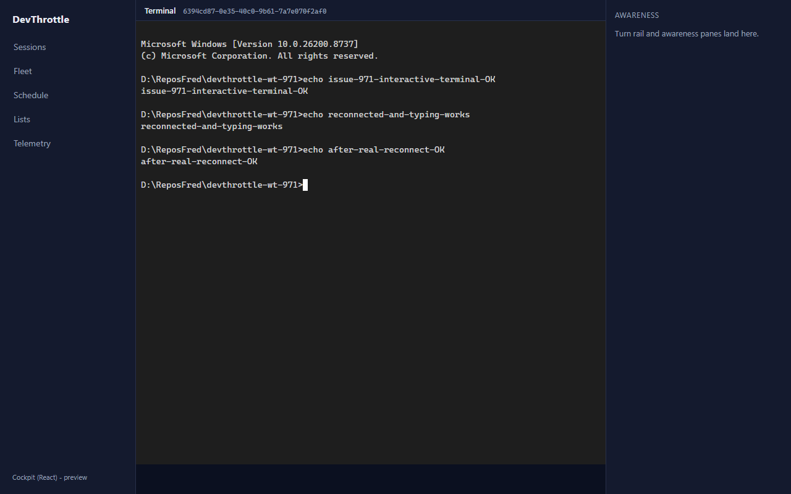

Issue #971 - Cockpit React: interactive terminal pane
Developer Agent proof - epic #967 (Rebuild the Cockpit in React). Branch
issue-971-cockpit-terminal.
What was implemented
The live, interactive, connection-resilient terminal pane for the React desktop Cockpit
(apps/cockpit) - the load-bearing pane and the reason for the whole rebuild. It is a
one-to-one port of the Blazor Cockpit's TerminalPane.razor +
cockpit-terminal.js, now driven entirely client-side:
- Output streams over a same-origin WebSocket to the Gateway
(
/sessions/{sid}/stream), which reverse-proxies to the owning Director. The token rides as thecc-gateway-tokencookie (a browser WebSocket cannot set an Authorization header). - Input is typeable. Every keystroke (including Esc, Ctrl+C, arrows, the
slash-command interface) is forwarded by a DIRECT client-to-Gateway REST call -
POST /sessions/{sid}/promptwithappendEnter:false- not through any server render channel. In Blazor this rode the SignalR circuit through a server-side[JSInvokable], so a degraded circuit blocked typing; here a degraded OUTPUT stream never blocks INPUT. - Hard-won rendering rules preserved: the grid mirrors the PTY exactly (columns
AND rows from the
sizemessage), the DOM renderer (not the canvas addon), bounded reconnect with a visible in-terminal status line, and the{"type":"closed"}control-frame handling that surfaces the real Director-unreachable reason. - The pane serves exactly one session and is remounted (engine torn down and recreated) when the selected session changes - it is keyed by session id.
Files
packages/client-core/src/terminal/interactive.ts- newInteractiveTerminalengine (the shared byte-stream / reconnect / grid-mirror mechanics, made interactive). The interactive sibling of the read-only mobile mirror (stream.ts).packages/client-core/src/terminal/interactive.test.ts- 9 unit tests asserting every hard rule.apps/cockpit/src/panes/TerminalPane.tsx- React pane wrapping the engine, keyed by session id.apps/cockpit/src/main.tsx- route/session/:sessionIdmounting the pane (the seam issue #972's roster will link to).apps/cockpit/src/styles.css-.term-*styles (bottom-anchored grid).
Acceptance criteria - verified
| Criterion | Result | Evidence |
|---|---|---|
| On a real live session the terminal renders coherently (no ghost-stacked frames) and stays current. | PASS | Live against a real isolated Director PTY (a RawCli cmd.exe session). The
cmd.exe banner + prompt rendered crisply with the DOM renderer, no ghosting - screenshot 1
and 3. |
| Typing works end to end, including control keys and the slash-command interface. | PASS | 75 keystrokes were forwarded, every one with appendEnter:false;
echo issue-971-interactive-terminal-OK was typed AND executed by the real PTY.
Control keys (ArrowUp -> ESC[A, Esc -> ESC) were forwarded as raw
VT escape sequences (control_key_forwarded: true). Screenshots 2-3;
typing-results.json. |
| Dropping and restoring the network reconnects the stream and does not lose the ability to type once restored. | PASS | Forcing the stream socket to drop repeatedly showed the bounded-reconnect status line
"[stream lost, reconnecting via gateway localhost:5231 (attempt 4)...]" (screenshot
R1). Restoring reconnected the stream, and
echo after-real-reconnect-OK then typed AND executed
(typing_after_reconnect: true). Screenshots R1-R3;
reconnect-results.json. |
| No absolute URLs in the client (lint rule passes). | PASS | npm run lint (the #968 Gateway-only-ingress ESLint rule over
packages/** + apps/**) reports 0 errors. The
stream URL is built from window.location; typing/output use root-relative
paths only. |
Automated checks
npm run typecheck (client-core + cockpit) -> clean npm run test --workspace @devthrottle/client-core -> 58 passed (9 new for InteractiveTerminal) npm run build --workspace @devthrottle/cockpit -> tsc + vite build succeeded npm run lint (Gateway-only-ingress) -> 0 errors
The 9 new unit tests deterministically assert: raw-byte keystroke forwarding with
appendEnter:false (printables and control keys), exact cols+rows
grid mirror from the size message, {"type":"closed"} surfaces the reason
and does NOT reset the reconnect streak, the first live byte DOES reset the streak, bounded
reconnect gives up after the cap with a visible status line, and dispose stops reconnecting.
Screenshots

echo issue-971-interactive-terminal-OK was executed by the real cmd.exe PTY; the
output rendered coherently below it.

[stream lost, reconnecting via gateway localhost:5231 (attempt 4)...].
echo after-real-reconnect-OK typed and executed - input survived the drop.How QA can reproduce
- Launch an isolated test Director and create a session (a RawCli
cmd.exesession is the simplest deterministic PTY):POST /sessionswith{"repoPath":"...","agent":"RawCli","command":"cmd.exe"}. - Serve
apps/cockpitwith a dev server whose/sessionspath (HTTP + WS) proxies to that Director's Control API loopback port (the Gateway's role), then open/c/session/<sid>. - Type into the terminal; the command runs in the PTY. Drop the stream socket; the reconnect status line shows; restore it and type again.
CenCon impact
No architecture or security drift. It reuses existing Gateway endpoints
(/sessions/{sid}/stream, /sessions/{sid}/prompt) and the merged
client-core contract; it adds no new ingress and no new secret. The
Gateway-only-ingress rule still passes. (The docs/cencon/ manifest set is not present
in this public repository, so there is nothing to update.)
I believe this is finished. All four acceptance criteria are met and proven both by deterministic unit tests and by a live end-to-end run against a real Director PTY.